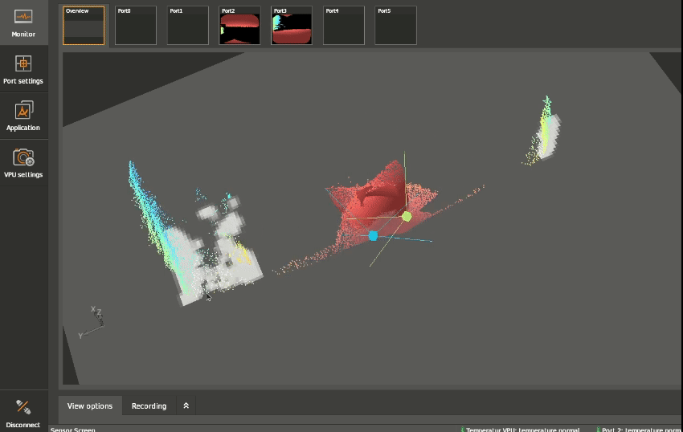
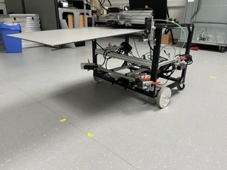

Overhanging loads
This feature introduces the possibility to define a static region in the user coordinate system which will be then excluded from the Obstacle Detection System. A typical use case is a situation where the load intersects with the FOV of at least one of the cameras on the AGV. A reasonable accuracy in the extrinsic calibration is a pre-requirement for this feature.
However, it should be noted that even with a proper customization of the overhanging load, detection performance will be deteriorated due to stray light caused by the load.
Note
Feature added in `firmware version >= 1.0.14`
Description
For load-carrying AGVs a typical scenario exists where the load intersects with the FoV of the camera causing false positives in the occupancy grid. These false positives negatively impact the performance of ODS, by reducing its close-range detection capabilities.
To mitigate this effect, the ODS feature overhanging loads is introduced to exclude measurement data from a specific geometric region from ODS. Only false positives originating from this geometric region can be reliably excluded by the overhanging load feature.
It has to be noted that the overhanging loads region should be static over time (w.r.t. to the robot coordinate system (RCS)).
This 3D exclusion region is defined by a 2D convex hull of up to 6 points in the XY plane (occupancy grid plane) in conjunction with the minLoadHeight and maxLoadHeight parameters for specifying its Z range. A pixel (3D measurement) is excluded if and only if the corresponding pixel ray intersects with the 3D exclusion region.

What can be considered an overhanging load?
If a load is obstructing the FoV of any of the cameras mounted on the AGV it is considered an overhanging load. Please don’t use this tool for other purposes that excluding static objects (w.r.t to the RCS). For use cases other that the designed applications this feature can reduce the ODS performance dramatically, and is therefore highly discouraged.
The minimum Load Height parameter: minLoadHeight is by default set to 40 cm above the ground.
It should not be confused with a parameter of an application use case where the user wants to exclude a particular region on the ground from ODS.
Setting minLoadHeight to zero will result in the ground pixels getting excluded which in turn results in detecting no usable floor for visual odometry.
How to configure
The configuration parameters for the overhanging load feature are placed in the grid section of the ODS JSON. This enables the feature to be configurable per application instance.
The loads defining geometric region has to be static over time. It can only be configured for a app instance in CONF state.
Shape Definition
The 3d regions are defined by a 2D convex hull of up to 6 points in the XY plane and a minLoadHeight and maxLoadHeight parameter for specifying the z range. Therefore, each 3D region has n+2 boundary plane patches (where n is the number of points of the convex hull outline). A pixel is invalidated if the corresponding pixel ray intersects with at least one of the boundary plane patches.
{
"applications": {
"instances": {
"app0": {
"class": "ods",
"configuration": {
"grid": {
"overhangingLoads": [{
"active": true,
"minLoadHeight": 0.4,
"maxLoadHeight": 1.0,
"region": [[-1.5, -2.0], [1.5, -2.0], [1.5, 2.0], [-1.5, 2.0]]
}]
},
....}
}
}
}
}
Configuration in ifm Vision Assistant

Example
In the following test setup, an overhanging load, i.e. a flat wooden piece, is obstructing the FoV of the cameras on the AGV. If no overhanging load region were defined it will be picked up by ODS as an obstacle. By defining and activating the overhanging load feature, the load is ignored from ODS.
Comparing with and without overhanging load feature in ODS

The flat piece of wood mounted above the cameras intersects the cameras’ field of view resulting in a false positive when no overhanging load region is defined. After defining and activating the overhanging load region feature, the load is ignored.
Overhanging load feature: Inactive |
Overhanging load feature: Active |
|---|---|
|
|


Impact of stray light artifacts
The robustness of the system against different Time of Flight (ToF) artifacts with an overhanging load feature enabled have to be considered. The system does not exclude the ToF measurements (i.e. measurement data) or apply different acquisition settings, but masked-out pixels based on the rays intersecting with the defined cuboid.
Therefore the stray light caused by the load can affect the performance of the ODS even though the exclusion cuboid excludes the whole geometric shape of the load. I.e. the stray light artifacts can be distributed over a larger area than the load itself. Please configure the geometric shape of the overhanging load area larger than the actual load shape, to be robust against stray light artifacts caused by the load.
The result is that even with proper customization of overhanging load parameters, the detection performance of ODS may deteriorate.